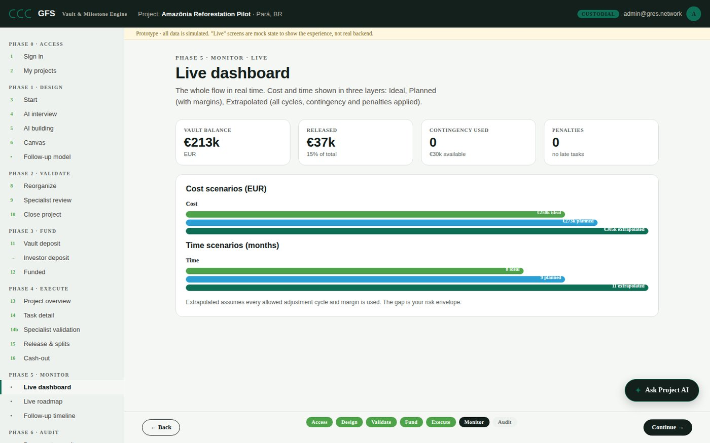

GFS is the vault and milestone engine behind funding that has to prove itself. Capital moves only when delivery is proven and signed.

Capital gets committed, but release is manual and opaque, proof is scattered across emails and spreadsheets, and trust depends on intermediaries nobody chose.
There are roughly 10 million NGOs worldwide. 92% operate on $1M a year or less. That 92% is not one flat group: it breaks into three tiers, each with its own ticket size and its own savings potential.
avg $25K ticket
avg $200K ticket
avg $750K ticket
The $500K to 1M tier is 4% of all NGOs and represents close to 30% of the total savings pool below. Source proxy: National Council of Nonprofits / Urban Institute size distribution, applied globally.
Four scenarios, from 1% to 10% reduction in administrative waste, scaled by the number of NGOs on the platform.
can be repurposed to the NGO cause
can be repurposed to the NGO cause
can be repurposed to the NGO cause
Range reflects 1% to 10% reduction in administrative waste across each adoption band.
Cost benchmarks used below:
| Scenario | $/year | Meals | Children vaccinated | Clean water access | Trees planted |
|---|---|---|---|---|---|
| X: 1,000 NGOs, 10% | $11.2M | 22.4M | ~153K | 280K people | ~74.7M |
| Y: 100,000 NGOs, 10% | $1.12B | 2.24B | ~15.3M | 28M people | ~7.5B |
| Z: 9.2M NGOs, 10% (full market) | $103B | 206B | ~1.4B | 2.58B people | ~687B |
At full scale (Z), the clean water figure alone exceeds the ~2 billion people currently without clean water access worldwide, and the tree figure is close to 70% of the global Trillion Trees Campaign target.
Governance and transparency are the badge that attracts and commits more donors.
Every milestone, every fund release, every proof of delivery is traceable on the platform. Not "trust us." Verify it yourself.
GFS is the vault and milestone engine behind funding.
Funders deposit into a vault for a specific project.
The project is mapped as a tree of milestones, each with terms, evidence, and validators.
The rules become an automated release schedule the moment the plan is saved.
Funds release only when delivery is proven and signed. A single release can split across many recipients, anywhere.
A designed protocol is the tailored rulebook GFS builds with each partner: milestones, required evidence, validators, release logic, splits, shaped to that partner's reality. NGOs are the first market. ESG funds, accelerators, impact investors, and corporate giving programs run on the same engine. The blockchain underneath is infrastructure for trust and compliance, not a product anyone has to see or understand.
Interactive demo and investor one-pager, unlocked with a quick email confirmation.